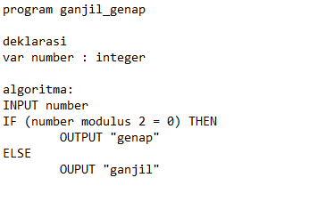

Algoritma adalah suatu instruksi atau suatu langkah-langkah yang berisi suatu langkah untuk membuat suatu hal dengan detail dan jelas, sehingga pembaca dapat mengerti akan cara untuk membuat sesuatu dengan jelas dari adanya Algoritma. Algoritma memiliki 3 jenis yaitu deskripsi, flowchart, dan pseudocode seperti contoh berikut

Cara Mengambil Air
1. Ambil gelas yang dapat menampung air.
2. Pegang gelas dan posisikan gelas dibawah tempat keluar air dari dispenser.
3. Tekan tombol dispenser agar air dapat mengalir dan isi secukupnya.
4. Setelah anda mengisinya, gelas yang berisi air siap diminum.
Kita dapat mengambil contoh pada tugas